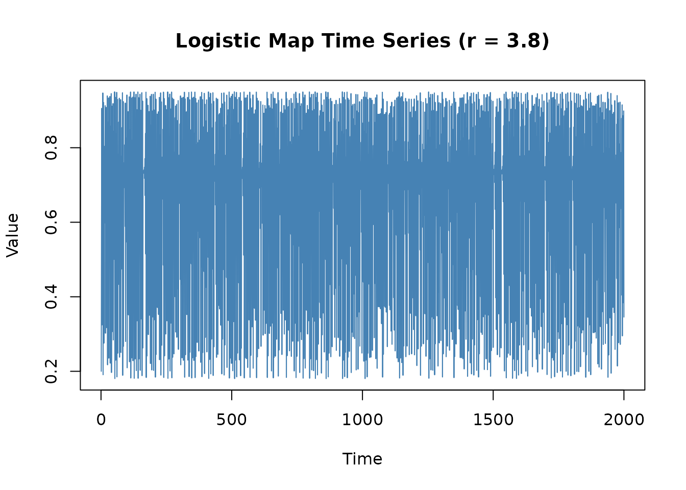
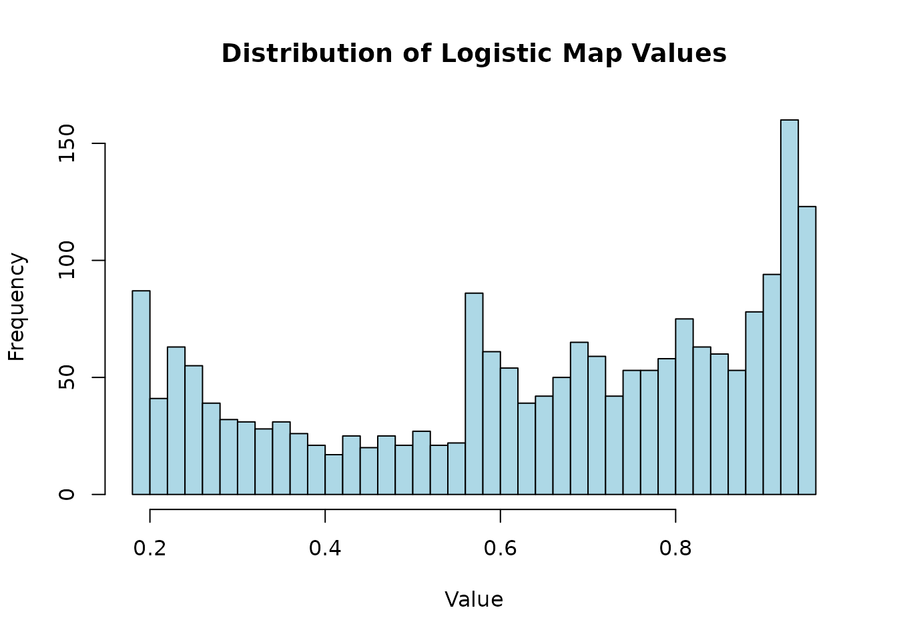
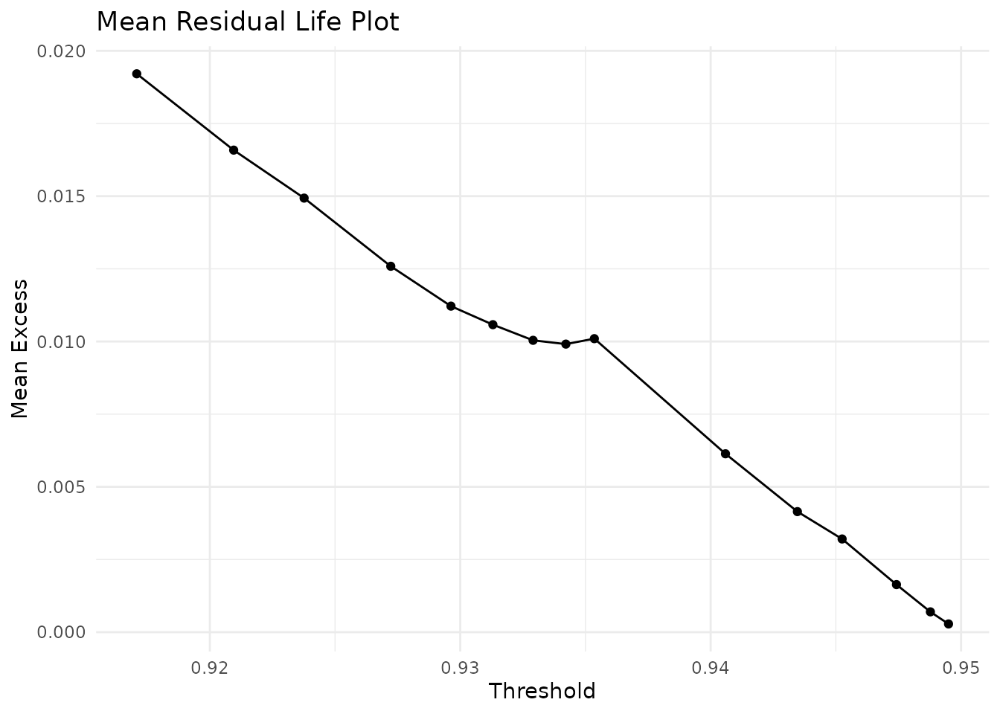
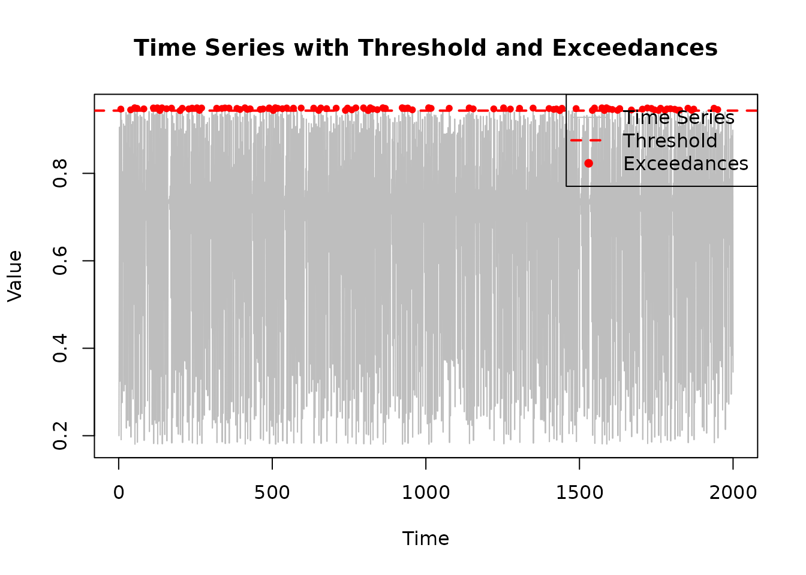
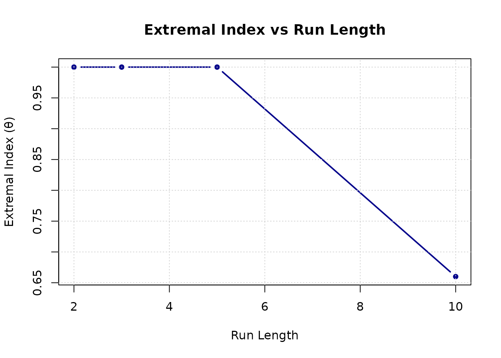
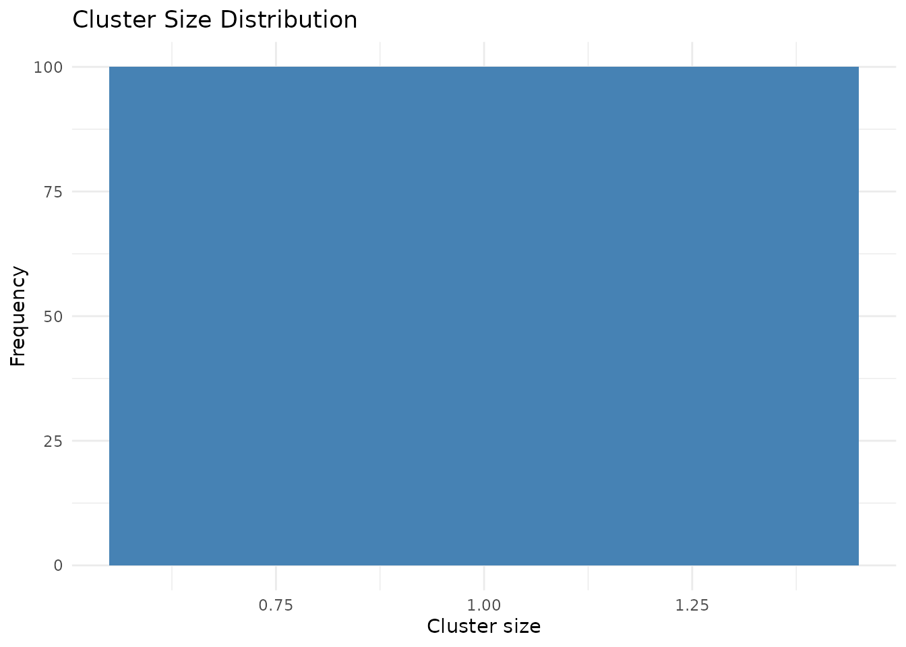

Getting Started with chaoticds: Interactive Extreme Value Analysis
chaoticds package
2026-09-18
Source:vignettes/getting-started-interactive.Rmd
getting-started-interactive.RmdIntroduction
The chaoticds package provides a comprehensive toolkit
for extreme value analysis in chaotic dynamical systems. This vignette
provides a quick introduction and demonstrates the basic workflow for
analyzing extreme events in chaotic time series.
Key Features
- Simulation Tools: Generate logistic and Hénon map time series
- Threshold Diagnostics: Tools for selecting appropriate thresholds
- Extremal Index Estimation: Multiple methods for estimating clustering of extremes
- Cluster Analysis: Analyze the size and distribution of extreme event clusters
- Interactive Tools: Shiny applications for exploratory analysis
- Bootstrap Methods: Confidence interval estimation
- Performance Optimization: Efficient implementations for large datasets
Basic Workflow
Step 1: Load the Package and Generate Data
library(chaoticds)
# Generate a logistic map time series
set.seed(123)
n <- 2000
logistic_data <- simulate_logistic_map(n, r = 3.8, x0 = 0.2)
# Quick look at the data
head(logistic_data)
#> [1] 0.2000000 0.6080000 0.9056768 0.3246201 0.8331191 0.5283202
summary(logistic_data)
#> Min. 1st Qu. Median Mean 3rd Qu. Max.
#> 0.1805 0.4460 0.6908 0.6420 0.8636 0.9500Step 2: Visualize the Time Series
# Basic time series plot
plot(1:length(logistic_data), logistic_data, type = "l",
main = "Logistic Map Time Series (r = 3.8)",
xlab = "Time", ylab = "Value", col = "steelblue")
# Distribution of values
hist(logistic_data, breaks = 30, main = "Distribution of Logistic Map Values",
xlab = "Value", col = "lightblue", border = "black")
Step 3: Threshold Selection
A crucial step in extreme value analysis is selecting an appropriate threshold. The package provides diagnostic tools to help with this decision.
# Mean Residual Life plot for threshold selection
diagnostic_thresholds <- quantile(
logistic_data,
seq(0.85, 0.99, by = 0.01)
)
mrl_plot(mean_residual_life(logistic_data, diagnostic_thresholds))
# Let's use the 95th percentile as our threshold
threshold <- quantile(logistic_data, 0.95)
cat("Selected threshold:", round(threshold, 4), "\n")
#> Selected threshold: 0.9435
# Extract exceedances
exc <- exceedances(logistic_data, threshold)
cat("Number of exceedances:", length(exc), "\n")
#> Number of exceedances: 100
cat("Exceedance rate:", round(length(exc)/length(logistic_data), 4), "\n")
#> Exceedance rate: 0.05Step 4: Visualize Threshold and Exceedances
# Plot time series with threshold and exceedances
plot(1:length(logistic_data), logistic_data, type = "l", col = "gray",
main = "Time Series with Threshold and Exceedances",
xlab = "Time", ylab = "Value")
abline(h = threshold, col = "red", lwd = 2, lty = 2)
# Highlight exceedances
exceed_indices <- which(logistic_data > threshold)
points(exceed_indices, logistic_data[exceed_indices], col = "red", pch = 16, cex = 0.8)
legend("topright", legend = c("Time Series", "Threshold", "Exceedances"),
col = c("gray", "red", "red"), lty = c(1, 2, NA),
pch = c(NA, NA, 16), lwd = c(1, 2, NA))
Step 5: Extremal Index Estimation
The extremal index θ measures the clustering of extreme events. Values close to 1 indicate independent extremes, while values less than 1 indicate clustering.
# Estimate extremal index using runs method
theta_runs <- extremal_index_runs(logistic_data, threshold, run_length = 3)
cat("Extremal index (runs method, r=3):", round(theta_runs, 4), "\n")
#> Extremal index (runs method, r=3): 1
# Estimate using intervals method
theta_intervals <- extremal_index_intervals(logistic_data, threshold)
cat("Extremal index (intervals method):", round(theta_intervals, 4), "\n")
#> Extremal index (intervals method): 3
# Compare with different run lengths
run_lengths <- c(2, 3, 5, 10)
theta_values <- sapply(run_lengths, function(r) {
extremal_index_runs(logistic_data, threshold, run_length = r)
})
plot(run_lengths, theta_values, type = "b", pch = 16,
main = "Extremal Index vs Run Length",
xlab = "Run Length", ylab = "Extremal Index (θ)",
col = "darkblue", lwd = 2)
grid()
Step 6: Cluster Analysis
Analyze the size distribution of extreme event clusters.
# Compute cluster sizes
cluster_sz <- cluster_sizes(logistic_data, threshold, run_length = 3)
cat("Number of clusters:", length(cluster_sz), "\n")
#> Number of clusters: 100
if (length(cluster_sz) > 0) {
# Cluster summary statistics
cluster_stats <- cluster_summary(cluster_sz)
cat("Mean cluster size:", round(cluster_stats["mean_size"], 2), "\n")
cat("Variance of cluster sizes:", round(cluster_stats["var_size"], 2), "\n")
# Plot cluster size distribution
if (requireNamespace("ggplot2", quietly = TRUE)) {
cluster_histogram(cluster_sz)
} else {
# Fallback to base R plot
barplot(table(cluster_sz), main = "Cluster Size Distribution",
xlab = "Cluster Size", ylab = "Frequency", col = "lightcoral")
}
}
#> Mean cluster size: 1
#> Variance of cluster sizes: 0
Advanced Features
Working with Hénon Map Data
# Generate Hénon map data
set.seed(456)
henon_data <- simulate_henon_map(1000, a = 1.4, b = 0.3)
# Work with the x-component
x_series <- henon_data$x
# Analyze extremes in x-component
x_threshold <- quantile(x_series, 0.95)
x_theta <- extremal_index_runs(x_series, x_threshold, run_length = 3)
cat("Hénon map x-component extremal index:", round(x_theta, 4), "\n")
#> Hénon map x-component extremal index: 1
# Plot the Hénon attractor
plot(henon_data$x, henon_data$y, pch = ".", cex = 0.5, col = "purple",
main = "Hénon Attractor", xlab = "x", ylab = "y")Performance Considerations
# For large datasets, consider:
# 1. Using appropriate block sizes for block maxima
block_size <- 50
bm <- block_maxima(logistic_data, block_size)
cat("Block maxima (block size", block_size, "):", length(bm), "values\n")
#> Block maxima (block size 50 ): 40 values
# 2. Sampling for threshold diagnostics on very large datasets
if (length(logistic_data) > 10000) {
sample_size <- 5000
sample_indices <- sample(length(logistic_data), sample_size)
sample_data <- logistic_data[sample_indices]
cat("Using sample of size", sample_size, "for diagnostics\n")
}Interactive Exploration
The package includes an interactive Shiny application for exploratory analysis:
# Launch the interactive explorer
launch_explorer()This will open a web browser with an interactive dashboard where you can:
- Generate and visualize different chaotic maps
- Interactively select thresholds
- Estimate extremal indices with different parameters
- Analyze cluster patterns
- Download results
Best Practices
Threshold Selection
- Use diagnostic plots (MRL plot) to guide threshold choice
- Balance between having enough exceedances and maintaining GPD validity
- Typical choice: 90th-95th percentile, but depends on data and application
Further Reading
- Block Maxima vs POT: See the “Block Maxima vs Peaks-over-Threshold for the Hénon Map” vignette
- Advanced Methods: Explore the package functions for mixing diagnostics and advanced cluster analysis
- Mathematical Background: Consult extreme value theory literature for theoretical foundations
Conclusion
The chaoticds package provides a comprehensive toolkit
for extreme value analysis in chaotic systems. This vignette
demonstrated the basic workflow from data generation through extremal
index estimation and cluster analysis. The interactive tools make it
easy to explore different parameters and methods, while the robust
implementation ensures reliable results for both small and large
datasets.
For more detailed examples and advanced techniques, see the other package vignettes and the function documentation.